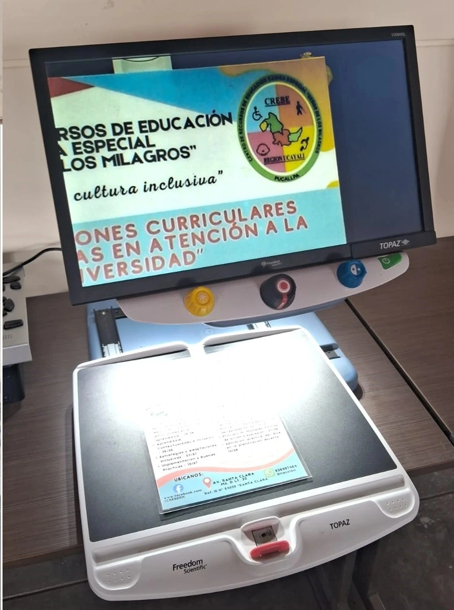
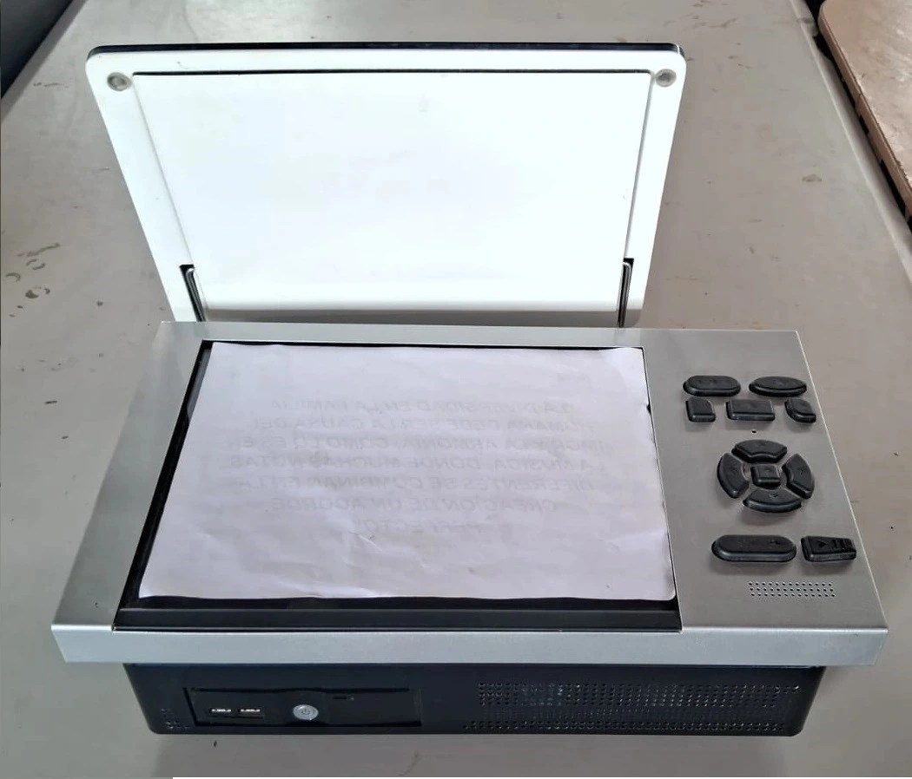
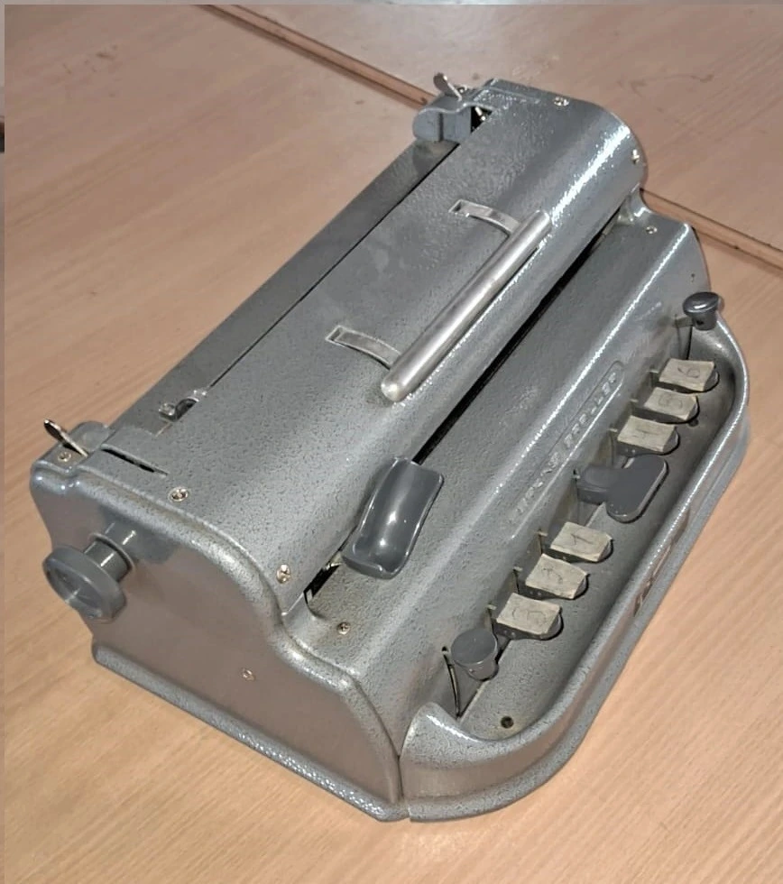
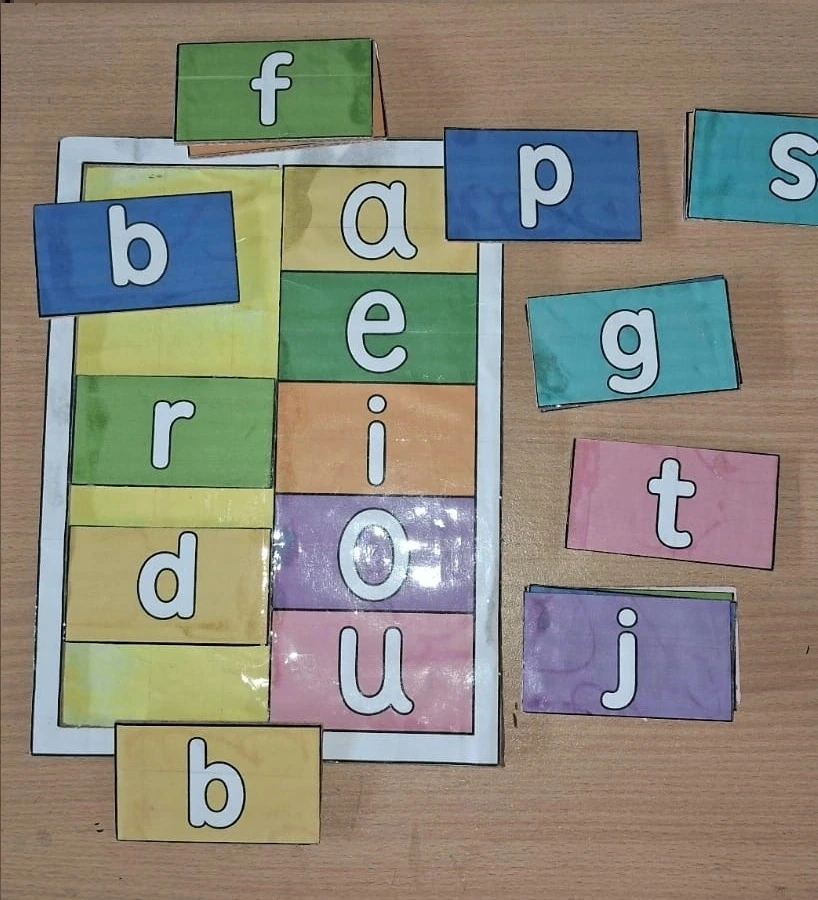
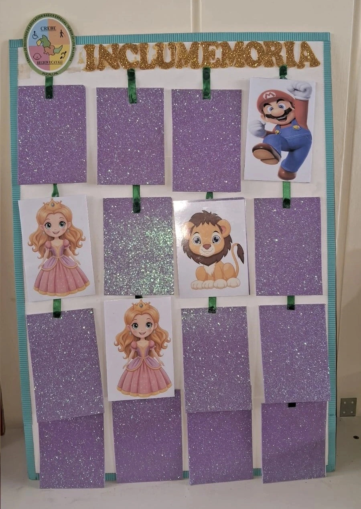
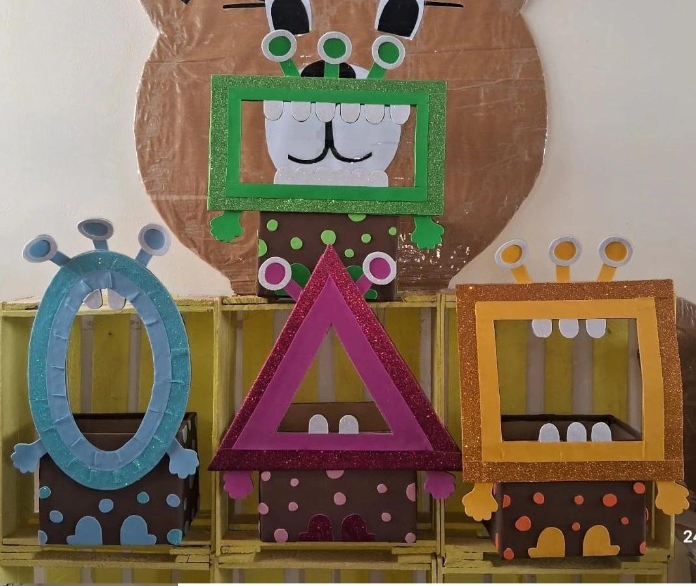
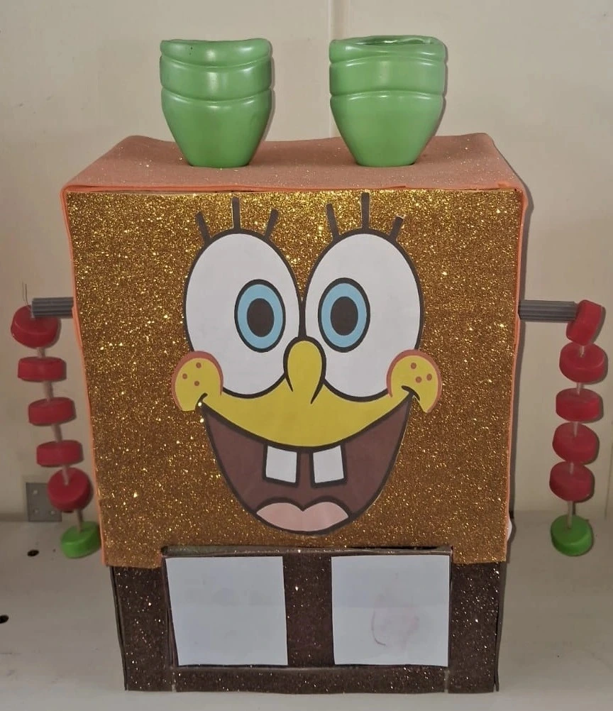

Materiales disponibles
Recursos físicos o impresos que se encuentran disponibles para orientación, préstamo, consulta o apoyo pedagógico.
- Textos en braille
- Láminas adaptadas
- Tarjetas de comunicación
- Material manipulativo
ECOSISTEMA VIRTUAL ACCESIBLE
Espacio para organizar materiales disponibles, equipos tecnológicos y producciones accesibles que fortalecen la atención educativa y la inclusión en el CREBE Ucayali.
Recursos de apoyo
Esta página presenta de forma ordenada los recursos disponibles y los materiales elaborados para facilitar su consulta, uso pedagógico y actualización institucional.
Recursos físicos o impresos que se encuentran disponibles para orientación, préstamo, consulta o apoyo pedagógico.
Equipos y herramientas que apoyan la accesibilidad, la elaboración de materiales y el trabajo institucional.



Producciones realizadas por el equipo para responder a necesidades educativas, comunicativas o de accesibilidad.



